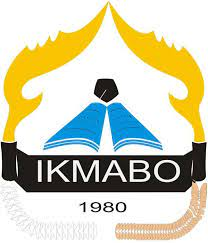
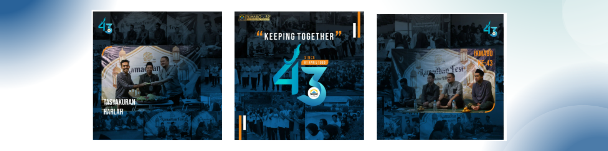
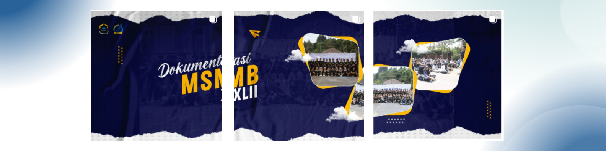

Sejarah
Ikatan Mahasiswa Bogor (Ikmabo) adalah organisasi yang didirikan pada tahun 1990 oleh sekelompok mahasiswa asal Bogor, awalnya dikenal sebagai Corp Ikatan Mahasiswa Bogor (CIMB). Meskipun memiliki sifat kedaerahan, Ikmabo bersikap terbuka dan melibatkan mahasiswa dari berbagai daerah, seperti Sukabumi dan Depok. Ikmabo memiliki banyak alumni, termasuk dari UIN SGD, Unjani, UPI, dan Unpad.
Pada sekitar tahun 2003, Ikmabo mendapatkan tambahan nama "BR" (Se-Bandung Raya) dalam AD/ART-nya. Organisasi ini aktif dalam berbagai kegiatan, seperti pembinaan SDM, bakti sosial, olahraga, kesenian, dan kewanitaan sesuai dengan amanat organisasinya.
Sekarang, Ikmabo masih aktif di Bandung dengan sekretariat di sekitar Kampus UIN SGD Bandung. Mereka telah meraih prestasi dalam bidang olahraga sepak bola dan mengadakan diskusi rutin, serta menerbitkan bulletin TALAS untuk mengembangkan bakat intelektual mahasiswa mereka.
Pelantikan

Pelantikan dan Halal Bihalal Ikatan Mahasiswa Bogor - Bandung Raya periode 2023-2024 adalah acara istimewa yang menandai awal periode kepengurusan baru dari organisasi mahasiswa ini. Acara ini tidak hanya merupakan seremoni formal pelantikan pengurus baru, tetapi juga merupakan kesempatan untuk merayakan persaudaraan dan persatuan di antara anggota organisasi.
Dalam suasana yang penuh semangat, acara ini menghadirkan momen penting di mana pengurus baru resmi mengambil alih tanggung jawab mereka untuk mengemban tugas organisasi. Di sisi lain, Halal Bihalal adalah saat di mana anggota lama dan baru berkumpul untuk berbagi kebahagiaan, saling memaafkan, dan memperkuat ikatan persaudaraan.
Pelantikan ini tidak hanya mencerminkan semangat kepemimpinan yang kuat dalam mencapai tujuan organisasi, tetapi juga menandai kesinambungan dari nilai-nilai dan tradisi yang telah diwariskan oleh para pendahulu. Selama periode 2023-2024, Ikatan Mahasiswa Bogor - Bandung Raya akan terus berjuang untuk memperjuangkan tujuan dan visi mereka, dengan harapan dapat memberikan kontribusi positif bagi mahasiswa di Bogor dan Bandung Raya."
Ini adalah contoh pengembangan kata-kata untuk deskripsi acara tersebut. Anda dapat menyesuaikannya sesuai dengan nuansa dan pesan yang ingin disampaikan dalam konteks sebenarnya.
Ramadhan

Ramadhan Festival adalah sebuah perayaan yang memancarkan semangat kegembiraan dan persatuan selama bulan suci Ramadhan. Festival ini menjadi sorotan tahunan di kota Bandung, di mana anak-anak dari berbagai latar belakang bersatu untuk merayakan momen yang penuh berkah ini.
Selama Ramadhan Festival, Bandung menjadi pusat kegiatan yang beragam. Banyak anak-anak dari berbagai kelompok usia dan komunitas berpartisipasi dalam berbagai kegiatan yang melibatkan seni, budaya, dan spiritualitas. Mereka menghiasi kota dengan warna-warna ceria, menampilkan seni tradisional, tampilan kuliner, dan pertunjukan kesenian yang menghibur.
Selain aspek hiburan, festival ini juga merupakan kesempatan bagi anak-anak untuk belajar tentang nilai-nilai seperti kebaikan, berbagi, dan kerjasama. Mereka terlibat dalam kegiatan sosial, penggalangan dana untuk amal, dan berpartisipasi dalam berbagai kegiatan kemanusiaan.
Melalui Ramadhan Festival, anak-anak belajar tentang pentingnya menjaga tradisi dan nilai-nilai keagamaan yang kuat, sambil memperluas cakrawala mereka dengan berinteraksi dengan teman-teman dari berbagai latar belakang. Ini adalah momen yang memperkaya pengalaman mereka dan mengukuhkan rasa persatuan dalam masyarakat Bandung yang beragam."
Ini adalah contoh pengembangan kata-kata untuk deskripsi Ramadhan Festival. Anda dapat menyesuaikannya sesuai dengan nuansa dan pesan yang ingin disampaikan dalam konteks sebenarnya.
Tasyakuran

"Tasyakuran dan tumpengan di Bandung adalah momen yang sarat makna, di mana masyarakat berkumpul untuk merayakan rasa syukur, solidaritas, dan persatuan. Acara ini menjadi perwujudan nilai-nilai budaya dan agama yang kuat dalam kehidupan sehari-hari di Bandung.
Tasyakuran adalah ungkapan terima kasih kepada Tuhan Yang Maha Esa atas berkah dan rahmat-Nya. Ini adalah saat di mana warga Bandung bersama-sama berdoa dan mengungkapkan rasa terima kasih atas segala hal yang telah diberikan kepada mereka. Diiringi dengan bacaan doa, acara ini menciptakan aura kebahagiaan dan ketenangan di tengah kesibukan kota.
Tumpengan adalah upacara yang melibatkan berbagai hidangan tradisional dan makanan bersama yang disusun dalam satu meja besar. Ini adalah bentuk berbagi dan persatuan, di mana masyarakat Bandung mengundang tetangga, teman, dan keluarga untuk bersama-sama menikmati hidangan yang telah disiapkan dengan cinta dan rasa syukur. Tumpengan juga sering dihadiri oleh tokoh agama dan pemimpin masyarakat yang memberikan nasihat dan doa kepada peserta.
Selama Tasyakuran dan tumpengan, masyarakat Bandung merasakan kehangatan dan kebersamaan. Momen ini juga menjadi waktu yang tepat untuk merenung, memperkuat hubungan, dan memperkokoh nilai-nilai tradisional yang diwariskan dari generasi ke generasi. Ini adalah perayaan yang memperkaya budaya dan roh kota Bandung, serta mencerminkan semangat kerukunan dan toleransi yang kuat di tengah masyarakat yang beragam."
Ini adalah contoh pengembangan kata-kata untuk deskripsi Tasyakuran dan tumpengan di Bandung. Anda dapat menyesuaikannya sesuai dengan nuansa dan pesan yang ingin disampaikan dalam konteks sebenarnya.
MSMB

Massa silaturahmi mahasiswa Bogor adalah acara yang melambangkan semangat persaudaraan di antara mahasiswa yang berasal dari Bogor. Acara ini bukan hanya sekedar pertemuan, melainkan perayaan rasa solidaritas dan persatuan di antara para mahasiswa yang memiliki tujuan dan mimpi yang sama.
Dalam suasana yang penuh semangat, mahasiswa berkumpul untuk berbagi pengalaman, pengetahuan, dan ide-ide yang dapat memperkaya perjalanan akademik dan kehidupan mereka. Mereka bertukar cerita, saling memberikan inspirasi, dan membangun relasi yang bermanfaat untuk masa depan.
Massa silaturahmi ini juga menjadi ajang untuk menjalani berbagai kegiatan, seperti seminar, lokakarya, dan diskusi yang relevan dengan perkembangan terkini di dunia pendidikan dan sosial. Ini adalah kesempatan yang sangat berharga untuk meningkatkan wawasan dan keterampilan mahasiswa.
Selain itu, acara ini juga menciptakan ikatan yang erat di antara mahasiswa yang terus memperjuangkan hak-hak mereka, berpartisipasi dalam kegiatan sosial, dan menjadi agen perubahan positif dalam masyarakat. Massa silaturahmi ini adalah bukti nyata dari semangat kebersamaan dan rasa solidaritas yang kuat di antara mahasiswa Bogor
First Gathering

"Fist Gathering Ikmabo adalah titik awal dari petualangan luar biasa yang akan dijalani oleh para anggota Ikatan Mahasiswa Bogor (Ikmabo). Acara ini merupakan perayaan bersejarah yang membangun dasar kuat bagi persaudaraan, kerja sama, dan pertukaran ide di antara anggota muda dari Bogor yang bercita-cita tinggi.
Dalam suasana hangat dan penuh semangat, Fist Gathering Ikmabo menjadi ajang pertemuan pertama bagi mahasiswa yang berbagi minat dan nilai-nilai bersama. Mereka berbagi cerita, harapan, dan impian mereka, sambil mempererat ikatan persahabatan yang akan mereka bawa selamanya.
Selama acara ini, para peserta tidak hanya mendiskusikan rencana dan program Ikmabo ke depan, tetapi juga mengekspresikan kreativitas mereka dalam berbagai aktivitas seperti workshop, pertunjukan seni, dan permainan. Ini adalah kesempatan bagi mereka untuk tumbuh bersama dan membentuk masa depan organisasi mereka.
Fist Gathering Ikmabo mencerminkan semangat kepemudaan, visi, dan semangat kolaborasi yang kuat di antara para anggota. Ini adalah awal yang menjanjikan untuk sebuah perjalanan yang penuh prestasi, pencapaian, dan persahabatan dalam Ikatan Mahasiswa Bogor (Ikmabo)."